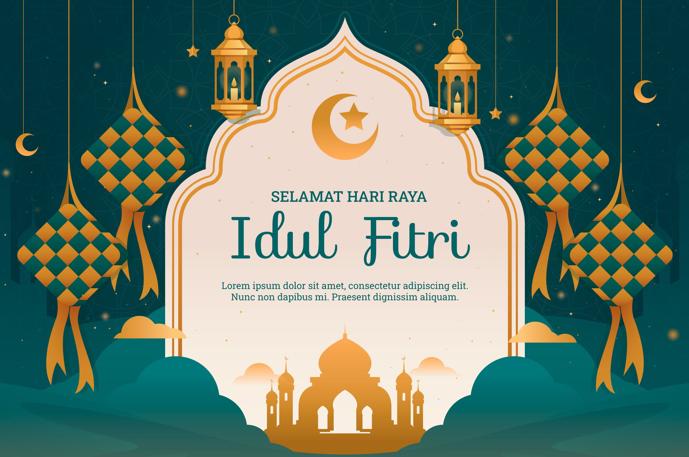

🌙 Selamat Hari Raya Idul Fitri 🌙
Dengan penuh rasa syukur dan kebahagiaan, kami mengucapkan Selamat Idul Fitri 1446 H.
Mohon maaf lahir dan batin atas segala khilaf dan salah.
Website ini kami hadirkan untuk berbagi momen indah Hari Raya bersama keluarga, teman, dan sahabat tercinta.
Silakan jelajahi halaman lainnya untuk melihat foto-foto lebaran, ucapan selamat, dan cerita hangat di hari yang fitri ini.
Semoga silaturahmi kita selalu terjaga dan kebahagiaan senantiasa menyertai langkah kita semua.
🌸✨

🕌 Tentang Idul Fitri
Idul Fitri, atau yang juga dikenal sebagai Lebaran, adalah hari besar umat Islam yang dirayakan setelah sebulan penuh menjalankan ibadah puasa di bulan Ramadhan.
Hari Raya Idul Fitri menjadi momen istimewa untuk saling memaafkan, mempererat tali silaturahmi, dan berbagi kebahagiaan dengan keluarga, sahabat, dan sesama.
Tradisi khas seperti shalat Id, bermaaf-maafan, berkunjung ke rumah kerabat, serta menikmati hidangan khas Lebaran seperti ketupat dan opor ayam,rendang menjadi bagian tak terpisahkan dari perayaan ini.
Lebih dari sekadar hari kemenangan, Idul Fitri adalah saat untuk kembali suci, memperbaiki diri, dan menyambut hari-hari baru dengan hati yang bersih dan penuh harapan.
🌙✨ Semoga Idul Fitri tahun ini membawa berkah, kedamaian, dan kebahagiaan bagi kita semua.
Ucapan Selamat Hari Raya
🌙 *Taqabbalallahu minna wa minkum.*
Semoga di hari yang fitri ini kita saling memaafkan dan membuka lembaran baru yang lebih baik.
Maafkan segala salah dan khilaf, semoga silaturahmi kita tetap terjalin erat.
💚 Selamat Idul Fitri 1446 H!